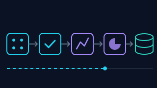
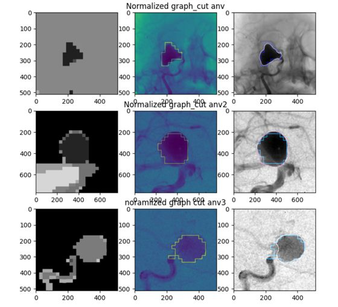

Fed-BioMed
Plateforme open source d'apprentissage fédéré pour la santé, déployée dans plusieurs réseaux hospitaliers. 5 ans de contribution à Inria.
IA × Biomédical
Data Scientist
6 ans d'expérience en Machine Learning, Deep Learning et IA générative dans un institut de recherche (Inria), du prototypage à la mise en production, avec une spécialisation dans les données de santé.
Federated Learning, segmentation d'imagerie médicale (3D U-Net), séries temporelles et traitement du signal.
Systèmes RAG et agents (LangChain, LangGraph) pour explorer des documents médicaux et des protocoles.
Python, APIs (Flask, FastAPI), React, Docker, CI/CD, tests, suivi des modèles (MLflow).
Pipelines PACS / DICOM, anonymisation, conformité RGPD, déploiement en réseaux hospitaliers.
Plateforme open source d'apprentissage fédéré pour la santé, déployée dans plusieurs réseaux hospitaliers. 5 ans de contribution à Inria.

Data engineeringCycle de vie complet : génération, validation, transformation Python + SQL, stockage, traitement incrémental, tests.

Imagerie médicaleFiltrage, segmentation d'anévrismes (Graph Cut, SLIC), YOLO et évaluation (Dice, IoU, Hausdorff).